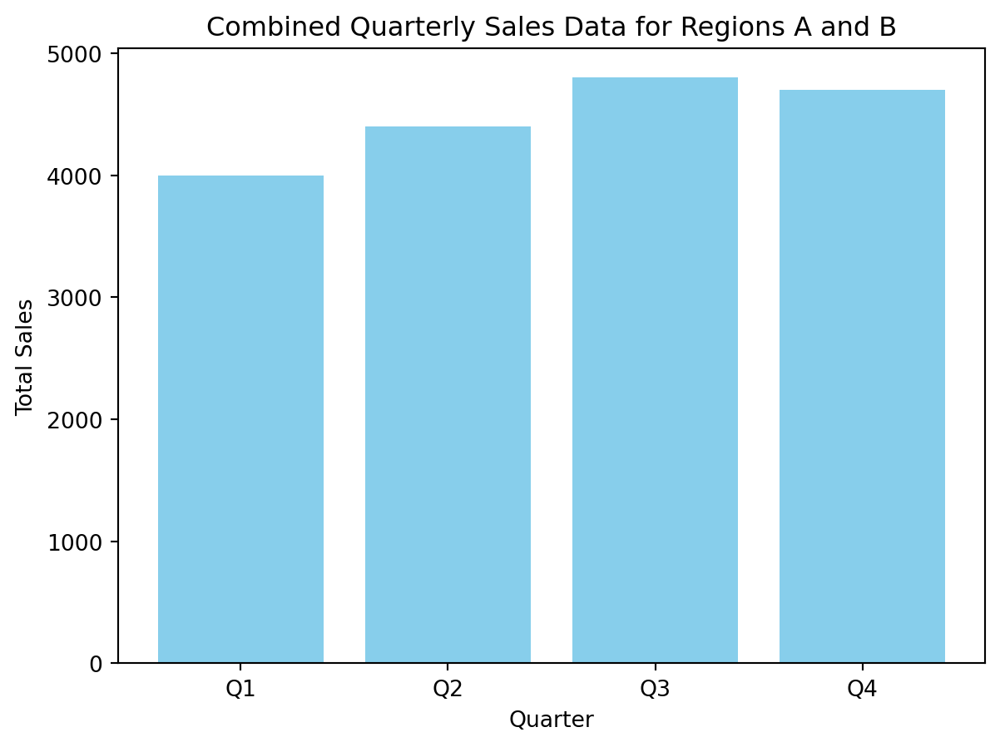
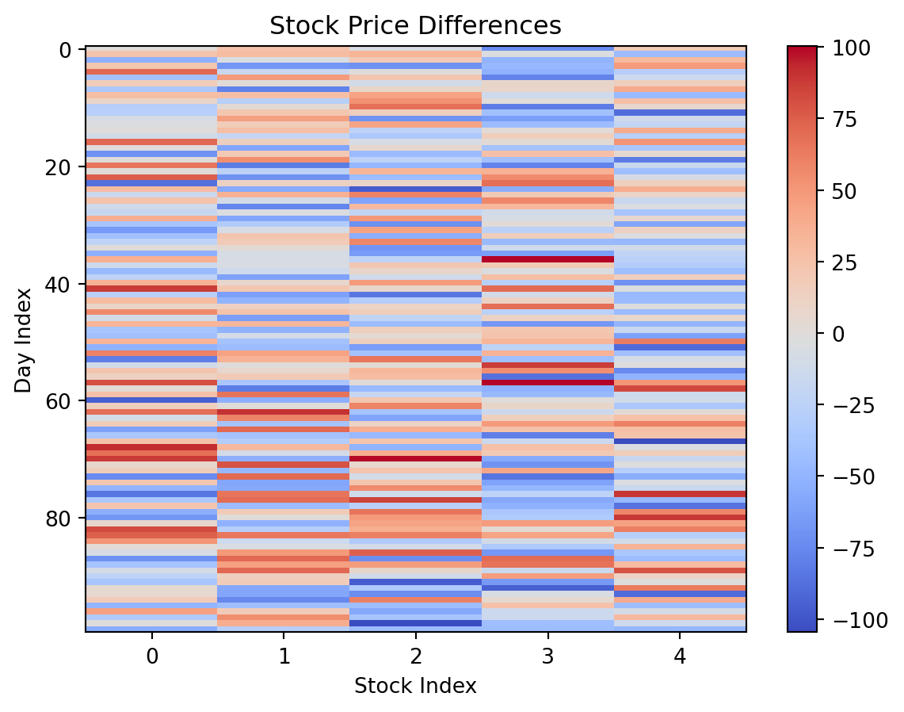
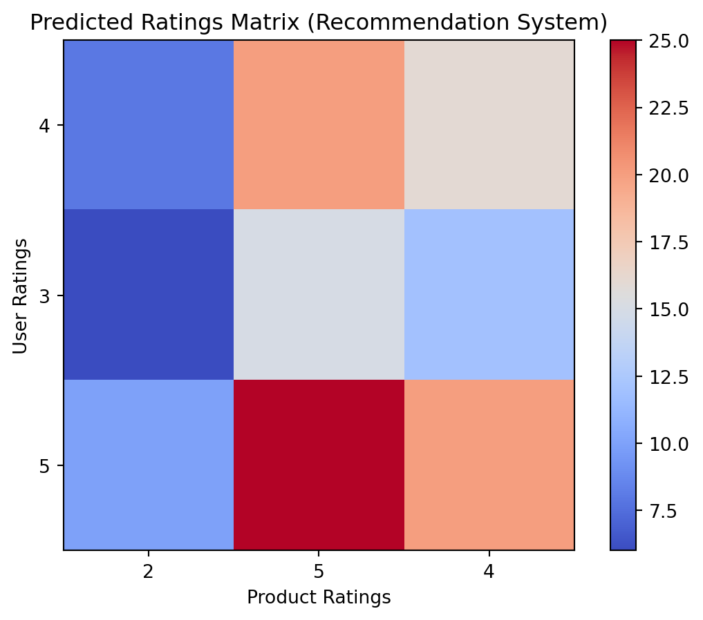
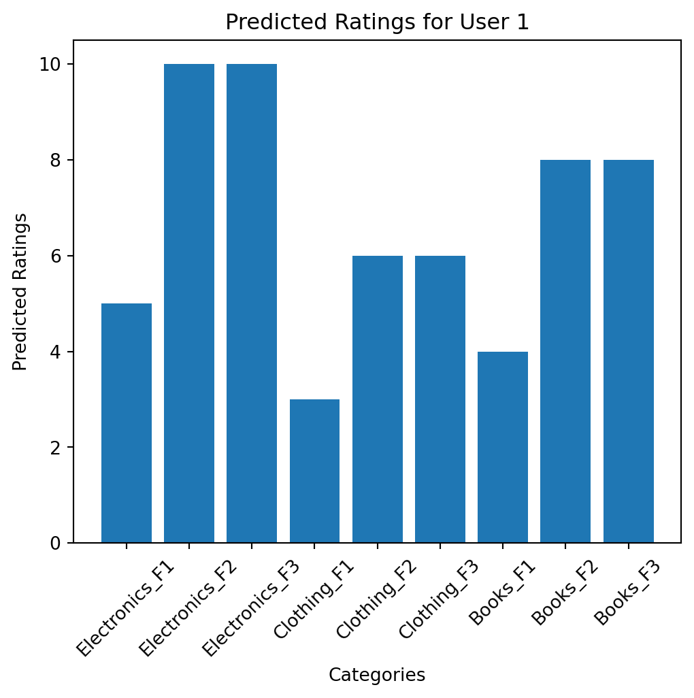

2Transforming Linear Algebra to Computational Language
2.1 Introduction
In the first module, we established a solid foundation in matrix algebra by exploring pseudocode and implementing fundamental matrix operations using Python. We practiced key concepts such as matrix addition, subtraction, multiplication, and determinants through practical examples in image processing, leveraging the SymPy library for symbolic computation.
As we begin the second module, “Transforming Linear Algebra to Computational Language,” our focus will shift towards applying these concepts with greater depth and actionable insight. This module is designed to bridge the theoretical knowledge from matrix algebra with practical computational applications. You will learn to interpret and utilize matrix operations, solve systems of equations, and analyze the rank of matrices within a variety of real-world contexts.
A new concept we will introduce is the Rank-Nullity Theorem, which provides a fundamental relationship between the rank of a matrix and the dimensions of its null space. This theorem is crucial for understanding the solution spaces of linear systems and the properties of linear transformations. By applying this theorem, you will be able to gain deeper insights into the structure of solutions and the behavior of matrix transformations.
This transition will not only reinforce your understanding of linear algebra but also enhance your ability to apply these concepts effectively in computational settings. Through engaging examples and practical exercises, you will gain valuable experience in transforming abstract mathematical principles into tangible solutions, setting a strong groundwork for advanced computational techniques.
2.2 Relearning of Terms and Operations in Linear Algebra
In this section, we will revisit fundamental matrix operations such as addition, subtraction, scaling, and more through practical examples. Our goal is to transform theoretical linear algebra into modern computational applications. We will demonstrate these concepts using Python, focusing on practical and industrial applications.
2.2.1 Matrix Addition and Subtraction in Data Analysis
Matrix addition and subtraction are fundamental operations that help in combining datasets and analyzing differences.
Simple Example: Combining Quarterly Sales Data
We begin with quarterly sales data from different regions and combine them to get the total sales. The sales data is given in Table 2.1. A ar plot of the total sales is shown in Fig 2.1.
Table 2.1: Quarterly Sales Data
Region
Q1
Q2
Q3
Q4
A
2500
2800
3100
2900
B
1500
1600
1700
1800
From Scratch Python Implementation:
import numpy as npimport matplotlib.pyplot as plt# Quarterly sales datasales_region_a = np.array([2500, 2800, 3100, 2900])sales_region_b = np.array([1500, 1600, 1700, 1800])# Combine sales datatotal_sales = sales_region_a + sales_region_b# Visualizationquarters = ['Q1', 'Q2', 'Q3', 'Q4']plt.bar(quarters, total_sales, color='skyblue')plt.xlabel('Quarter')plt.ylabel('Total Sales')plt.title('Combined Quarterly Sales Data for Regions A and B')plt.show()

Figure 2.1: Computing Total Sales using Numpy aggregation method
In the above Python code, we have performed the aggregation operation with the NumPy method. Same can be done in a more data analysis style using pandas inorder to handle tabular data meaningfully. In this approach, quarterly sales data of each region is stored as DataFrames(like an excel sheet). The we combine these two DataFrames into one. After that create a new row with index ‘Total’ and populate this row with sum of quarterly sales in Region A and Region B. Finally a bar plot is created using this ‘Total’ sales. Advantage of this approach is that we don’t need the matplotlib library to create visualizations!. The EDA using this approach is shown in Fig 2.2.
import pandas as pdimport matplotlib.pyplot as plt# DataFrames for quarterly sales datadf_a = pd.DataFrame({'Q1': [2500], 'Q2': [2800], 'Q3': [3100], 'Q4': [2900]}, index=['Region A'])df_b = pd.DataFrame({'Q1': [1500], 'Q2': [1600], 'Q3': [1700], 'Q4': [1800]}, index=['Region B'])# Combine datadf_combined = df_a.add(df_b, fill_value=0)df_combined.loc["Total"] = df_combined.sum(axis=0)# Visualizationdf_combined.loc["Total"].plot(kind='bar', color=['green'])plt.xlabel('Quarter')plt.ylabel('Total Sales')plt.title('Combined Quarterly Sales Data for Regions A and B')plt.show()
Figure 2.2: Computation of Total Sales using Pandas method
We can extend this in to more advanced examples. Irrespective to the size of the data, for representation and aggregation tasks matrix models are best options and are used in industry as a standard. Let us consider an advanced example to analyse difference in stock prices. For this example we are using a simulated data. The python code for this simulation process is shown in Fig 2.3.
import numpy as npimport matplotlib.pyplot as plt# Simulated observed and predicted stock pricesobserved_prices = np.random.uniform(100, 200, size=(100, 5))predicted_prices = np.random.uniform(95, 210, size=(100, 5))# Calculate the difference matrixprice_differences = observed_prices - predicted_prices# Visualizationplt.imshow(price_differences, cmap='coolwarm', aspect='auto')plt.colorbar()plt.title('Stock Price Differences')plt.xlabel('Stock Index')plt.ylabel('Day Index')plt.show()

Figure 2.3: Demonstration of Stock Price simulated from a Uniform Distribution
Another important matrix operation relevant to data analytics and Machine Learning application is scaling. This is considered as a statistical tool to make various features (attributes) in to same scale so as to avoid unnecessary misleading impact in data analysis and its intepretation. In Machine Learning context, this pre-processing stage is inevitable so as to make the model relevant and usable.
Simple Example: Normalizing Employee Performance Data
Table 2.2: Employee Performance Data
Employee
Metric A
Metric B
X
80
700
Y
90
800
Z
100
900
A
110
1000
B
120
1100
Using simple python code we can simulate the model for min-max scaling. The formula for min-max scaling is: \[min_max(X)=\dfrac{X-min(X)}{max(X)-min(X)}\]
For example, while applying the min-max scaling in the first value of Metric A, the scaled value is \[min_max(80)\dfrac{80-80}{120-80}=0\]
Similarly
\[min_max(100)\dfrac{100-80}{120-80}=0.5\]
When we apply this formula to Metric A and Metric B, the scaled output from Table 2.2 will be as follows:
Table 2.3: Employee Performance Data
Employee
Metric A
Metric B
X
0.00
0.00
Y
0.25
0.25
Z
0.50
0.50
A
0.75
0.75
B
1.00
1.00
It is interesting to look into the scaled data! In the orginal table (Table 2.2) it is looked like Metric B is superior. But from the scaled table (Table 2.3), it is clear that both the Metrics are representing same relative information. This will help us to identify the redundency in measure and so skip any one of the Metric before analysis!.
The same can be achieved through a matrix operation. The Python implementation of this scaling process is shown in Fig 2.4.
From the first sub plot, it is clear that there is a significant difference in the distributions (Metric A and Metric B values). But the second sub plot shows that both the distributions have same pattern and the values ranges between 0 and 1. In short the visualization is more appealing and self explanatory in this case.
Note
The min-max scaling method will confine the feature values (attributes) into the range \([0,1]\). So in effect all the features are scaled proportionally to the data spectrum.
Similarly, we can use the standard scaling (transformation to normal distribution) using the transformation \(\dfrac{x-\bar{x}}{\sigma}\). Scaling table is given as a practice task to the reader. The python code for this operation is shown in Fig 2.5.
# Standard scaling from scratchdef standard_scaling(data): mean = np.mean(data, axis=0) std = np.std(data, axis=0) scaled_data = (data - mean) / stdreturn scaled_data# Apply standard scalingscaled_data_scratch = standard_scaling(data)print("Standard Scaled Data (from scratch):\n", scaled_data_scratch)# Visualizationplt.figure(figsize=(6, 5))plt.subplot(1, 2, 1)plt.imshow(data, cmap='viridis')plt.title('Original Data')plt.colorbar()plt.subplot(1, 2, 2)plt.imshow(scaled_data_scratch, cmap='viridis')plt.title('Scaled Data')plt.colorbar()plt.show()
Standard Scaled Data (from scratch):
[[-1.41421356 -1.41421356]
[-0.70710678 -0.70710678]
[ 0. 0. ]
[ 0.70710678 0.70710678]
[ 1.41421356 1.41421356]]
Figure 2.5: Min-max scaling using basic python
To understand the effect of standard scaling, let us consider Fig 2.6. This plot create the frequency distribution of the data as a histogram along with the density function. From the first sub-plot, it is clear that the distribution has multiple modes (peaks). When we apply the standard scaling, the distribution become un-modal(only one peek). This is demonstrated in the second sub-plot.
# Standard scaling from scratchimport seaborn as sns# Create plotsplt.figure(figsize=(6, 5))# Plot for original dataplt.subplot(1, 2, 1)sns.histplot(data, kde=True, bins=10, palette="viridis")plt.title('Original Data Distribution')plt.xlabel('Value')plt.ylabel('Frequency')# Plot for standard scaled dataplt.subplot(1, 2, 2)sns.histplot(scaled_data_scratch, kde=True, bins=10, palette="viridis")plt.title('Standard Scaled Data Distribution')plt.xlabel('Value')plt.ylabel('Frequency')plt.tight_layout()plt.show()
Figure 2.6: Impact of standard scaling on the distribution
A scatter plot showing the compare the impact of scaling on the given distribution is shown in Fig 2.7.
# Plot original and scaled dataplt.figure(figsize=(6, 5))# Original Dataplt.subplot(1, 3, 1)plt.scatter(data[:, 0], data[:, 1], color='blue')plt.title('Original Data')plt.xlabel('Metric A')plt.ylabel('Metric B')# Standard Scaled Dataplt.subplot(1, 3, 2)plt.scatter(scaled_data_scratch[:, 0], scaled_data_scratch[:, 1], color='green')plt.title('Standard Scaled Data')plt.xlabel('Metric A (Standard Scaled)')plt.ylabel('Metric B (Standard Scaled)')# Min-Max Scaled Dataplt.subplot(1, 3, 3)plt.scatter(scaled_data[:, 0], scaled_data[:, 1], color='red')plt.title('Min-Max Scaled Data')plt.xlabel('Metric A (Min-Max Scaled)')plt.ylabel('Metric B (Min-Max Scaled)')plt.tight_layout()plt.show()
Figure 2.7: Comparison of impact of scaling on the distribution
From the Fig 2.7, it is clear that the scaling does not affect the pattern of the data, instead it just scale the distribution proportionally!
We can use the scikit-learn library for do the same thing in a very simple handy approach. The python code for this job is shown below.
from sklearn.preprocessing import MinMaxScaler# Min-max scaling using sklearnscaler = MinMaxScaler()min_max_scaled_data_sklearn = scaler.fit_transform(data)print("Min-Max Scaled Data (using sklearn):\n", min_max_scaled_data_sklearn)
from sklearn.preprocessing import StandardScaler# Standard scaling using sklearnscaler = StandardScaler()scaled_data_sklearn = scaler.fit_transform(data)print("Standard Scaled Data (using sklearn):\n", scaled_data_sklearn)
Standard Scaled Data (using sklearn):
[[-1.41421356 -1.41421356]
[-0.70710678 -0.70710678]
[ 0. 0. ]
[ 0.70710678 0.70710678]
[ 1.41421356 1.41421356]]
A scatter plot showing the impact on scaling is shown in Fig 2.8. This plot compare the mmin-max and standard-scaling.
# Plot original and scaled dataplt.figure(figsize=(6, 5))# Original Dataplt.subplot(1, 3, 1)plt.scatter(data[:, 0], data[:, 1], color='blue')plt.title('Original Data')plt.xlabel('Metric A')plt.ylabel('Metric B')# Standard Scaled Dataplt.subplot(1, 3, 2)plt.scatter(scaled_data_sklearn[:, 0], scaled_data_sklearn[:, 1], color='green')plt.title('Standard Scaled Data')plt.xlabel('Metric A (Standard Scaled)')plt.ylabel('Metric B (Standard Scaled)')# Min-Max Scaled Dataplt.subplot(1, 3, 3)plt.scatter(min_max_scaled_data_sklearn[:, 0], min_max_scaled_data_sklearn[:, 1], color='red')plt.title('Min-Max Scaled Data')plt.xlabel('Metric A (Min-Max Scaled)')plt.ylabel('Metric B (Min-Max Scaled)')plt.tight_layout()plt.show()
Figure 2.8: Camparison of Min-max and standard scalings with original data
2.2.2 More on Matrix Product and its Applications
In the first module of our course, we introduced matrix products as scalar projections, focusing on how matrices interact through basic operations. In this section, we will expand on this by exploring different types of matrix products that have practical importance in various fields. One such product is the Hadamard product, which is particularly useful in applications ranging from image processing to neural networks and statistical analysis. We will cover the definition, properties, and examples of the Hadamard product, and then delve into practical applications with simulated data.
2.2.2.1 Hadamard Product
The Hadamard product (or element-wise product) of two matrices is a binary operation that combines two matrices of the same dimensions to produce another matrix of the same dimensions, where each element is the product of corresponding elements in the original matrices.
Definition (Hadamard Product):
For two matrices \(A\) and \(B\) of the same dimension \(m \times n\), the Hadamard product \(A \circ B\) is defined as:
\[(A \circ B)_{ij} = A_{ij} \cdot B_{ij}\]
where \(\cdot\) denotes element-wise multiplication.
Properties of Hadamard Product
Commutativity: \[A \circ B = B \circ A\]
Associativity: \[(A \circ B) \circ C = A \circ (B \circ C)\]
Distributivity: \[A \circ (B + C) = (A \circ B) + (A \circ C)\]
Some simple examples to demonstrate the Hadamard product is given below.
In the following code chunks the computational process of Hadamard product is implemented in Python. Here both the from the scratch and use of external module versions are included.
1. Compute Hadamard Product from Scratch (without Libraries)
Here’s how you can compute the Hadamard product manually:
# Define matrices A and BA = [[1, 2, 3], [4, 5, 6]]B = [[7, 8, 9], [10, 11, 12]]# Function to compute Hadamard productdef hadamard_product(A, B):# Get the number of rows and columns num_rows =len(A) num_cols =len(A[0])# Initialize the result matrix result = [[0]*num_cols for _ inrange(num_rows)]# Compute the Hadamard productfor i inrange(num_rows):for j inrange(num_cols): result[i][j] = A[i][j] * B[i][j]return result# Compute Hadamard producthadamard_product_result = hadamard_product(A, B)# Display resultprint("Hadamard Product (From Scratch):")for row in hadamard_product_result:print(row)
In statistics, the Hadamard product can be applied to scale covariance matrices. Here’s how we can compute the covariance matrix using matrix operations and apply scaling. Following Python code demonstrate this.
import sympy as spimport numpy as np# Simulated large dataset (2D array) using NumPydata = np.random.rand(100, 10)# Compute the mean of each columnmean = np.mean(data, axis=0)# Center the datacentered_data = data - mean# Compute the covariance matrix using matrix product operationcov_matrix = (centered_data.T @ centered_data) / (centered_data.shape[0] -1)cov_matrix_sympy = sp.Matrix(cov_matrix)# Simulated scaling factors (2D array) using SymPy Matrixscaling_factors = sp.Matrix(np.random.rand(10, 10))# Compute Hadamard productscaled_cov_matrix = cov_matrix_sympy.multiply(scaling_factors)# Display resultsprint("Covariance Matrix:")print(cov_matrix_sympy)print("\nScaling Factors:")print(scaling_factors)print("\nScaled Covariance Matrix:")print(scaled_cov_matrix)
The inner product of two matrices is a generalized extension of the dot product, where each matrix is treated as a vector in a high-dimensional space. For two matrices \(A\) and \(B\) of the same dimension \(m \times n\), the inner product is defined as the sum of the element-wise products of the matrices.
Definition (Inner product)
For two matrices \(A\) and \(B\) of dimension \(m \times n\), the inner product \(\langle A, B \rangle\) is given by:
\[\langle A, B \rangle = \sum_{i=1}^{m} \sum_{j=1}^{n} A_{ij} \cdot B_{ij}\]
where \(\cdot\) denotes element-wise multiplication.
Properties
Commutativity: \[\langle A, B \rangle = \langle B, A \rangle\]
Linearity: \[\langle A + C, B \rangle = \langle A, B \rangle + \langle C, B \rangle\]
Positive Definiteness: \[\langle A, A \rangle \geq 0\] with equality if and only if \(A\) is a zero matrix.
Some simple examples showing the mathematical process of calculating the inner product is given bellow.
Given matrices: \[A=\begin{bmatrix}1&2&3&4\\5&6&7&8\\9&10&11&12\\13&14&15&16\end{bmatrix}\]\[B=\begin{bmatrix}16&15&14&13\\12&11&10&9\\8&7&6&5\\4&3&2&1\end{bmatrix}\]
Now let’s look into the computational part of inner product.
Compute Inner Product from Scratch (without Libraries)
Here’s how you can compute the inner product from the scratch:
# Define matrices A and BA = [[1, 2, 3], [4, 5, 6]]B = [[7, 8, 9], [10, 11, 12]]# Function to compute inner productdef inner_product(A, B):# Get the number of rows and columns num_rows =len(A) num_cols =len(A[0])# Initialize the result result =0# Compute the inner productfor i inrange(num_rows):for j inrange(num_cols): result += A[i][j] * B[i][j]return result# Compute inner productinner_product_result = inner_product(A, B)# Display resultprint("Inner Product (From Scratch):")print(inner_product_result)
Inner Product (From Scratch):
217
Compute Inner Product Using NumPy
Here’s how to compute the inner product using Numpy:
import numpy as np# Define matrices A and BA = np.array([[1, 2, 3], [4, 5, 6]])B = np.array([[7, 8, 9], [10, 11, 12]])# calculating innerproductinner_product = (A*B).sum() # calculate element-wise product, then column sumprint("Inner Product (Using numpy):")print(inner_product)
Inner Product (Using numpy):
217
The same operation can be done using SymPy functions as follows.
import sympy as spimport numpy as np # Define matrices A and BA = sp.Matrix([[1, 2, 3], [4, 5, 6]])B = sp.Matrix([[7, 8, 9], [10, 11, 12]])# Compute element-wise productelementwise_product = A.multiply_elementwise(B)# Calculate sum of each columninner_product_sympy = np.sum(elementwise_product)# Display resultprint("Inner Product (Using SymPy):")print(inner_product_sympy)
Inner Product (Using SymPy):
217
A vector dot product (in Physics) can be calculated using SymPy.dot() function as shown below.
Let \(A=\begin{pmatrix}1&2&3\end{pmatrix}\) and \(B=\begin{pmatrix}4&5&6\end{pmatrix}\), then the dot product, \(A\cdot B\) is computed as:
import sympy as spA=sp.Matrix([1,2,3])B=sp.Matrix([4,5,6])display(A.dot(B)) # calculate fot product of A and B
\(\displaystyle 32\)
A word of caution
In SymPy , sp.Matrix([1,2,3]) create a column vector. But np.array([1,2,3]) creates a row vector. So be careful while applying matrix/ dot product operations on these objects.
The same dot product using numpy object can be done as follows:
import numpy as npA=np.array([1,2,3])B=np.array([4,5,6])display(A.dot(B.T))# dot() stands for dot product B.T represents the transpose of B
np.int64(32)
Practical Applications
Application 1: Signal Processing
In signal processing, the inner product can be used to measure the similarity between two signals. Here the most popular measure of similarity is the cosine similarity. This measure is defined as:
\[\cos \theta=\dfrac{A\cdot B}{||A|| ||B||}\]
Now consider two digital signals are given. It’s cosine similarity measure can be calculated with a simulated data as shown below.
import numpy as np# Simulated large signals (1D array) using NumPysignal1 = np.sin(np.random.rand(1000))signal2 = np.cos(np.random.rand(1000))# Compute inner productinner_product_signal = np.dot(signal1, signal2)#cosine_sim=np.dot(signal1,signal2)/(np.linalg.norm(signal1)*np.linalg.norm(signal2))# Display resultcosine_sim=inner_product_signal/(np.sqrt(np.dot(signal1,signal1))*np.sqrt(np.dot(signal2,signal2)))print("Inner Product (Using numpy):")print(inner_product_signal)print("Similarity of signals:")print(cosine_sim)
Inner Product (Using numpy):
392.93785612910847
Similarity of signals:
0.8761149165761577
The inner product can be used to compute covariance matrices for statistical data analysis. If \(X\) is a given distribution and \(x=X-\bar{X}\). Then the covariance of \(X\) can be calculated as \(cov(X)=\dfrac{1}{n-1}(x\cdot x^T)\)2. The python code a simulated data is shown below.
import sympy as spimport numpy as np# Simulated large dataset (2D array) using NumPydata = np.random.rand(100, 10)# Compute the mean of each columnmean = np.mean(data, axis=0)# Center the datacentered_data = data - mean# Compute the covariance matrix using matrix product operationcov_matrix = (centered_data.T @ centered_data) / (centered_data.shape[0] -1)cov_matrix_sympy = sp.Matrix(cov_matrix)# Display resultsprint("Covariance Matrix:")display(cov_matrix_sympy)
These examples demonstrate the use of inner product and dot product in various applications.
2.2.2.5 Outer Product
The outer product of two vectors results in a matrix, and it is a way to combine these vectors into a higher-dimensional representation.
Definition (Outer Product)
For two vectors \(\mathbf{u}\) and \(\mathbf{v}\) of dimensions \(m\) and \(n\) respectively, the outer product \(\mathbf{u} \otimes \mathbf{v}\) is an \(m \times n\) matrix defined as:
1. Compute Outer Product of Vectors from Scratch (without Libraries)
Here’s how you can compute the outer product manually:
# Define vectors u and vu = [1, 2]v = [3, 4, 5]# Function to compute outer productdef outer_product(u, v):# Initialize the result result = [[a * b for b in v] for a in u]return result# Compute outer productouter_product_result = outer_product(u, v)# Display resultprint("Outer Product of Vectors (From Scratch):")for row in outer_product_result:print(row)
Here’s how to compute the outer product using SymPy:
import sympy as sp# Define vectors u and vu = sp.Matrix([1, 2])v = sp.Matrix([3, 4, 5])# Compute outer product using SymPyouter_product_sympy = u * v.T# Display resultprint("Outer Product of Vectors (Using SymPy):")display(outer_product_sympy)
The outer product of two matrices extends the concept from vectors to higher-dimensional tensors. For two matrices \(A\) and \(B\), the outer product results in a higher-dimensional tensor and is generally expressed as block matrices.
Definition (Outer Product of Matrices)
For two matrices \(A\) of dimension \(m \times p\) and \(B\) of dimension \(q \times n\), the outer product \(A \otimes B\) results in a tensor of dimension \(m \times q \times p \times n\). The entries of the tensor are given by:
\[(A \otimes B)_{ijkl} = A_{ij} \cdot B_{kl}\]
where \(\cdot\) denotes the outer product operation.
Properties
Linearity: \[(A + C) \otimes B = (A \otimes B) + (C \otimes B)\]
Distributivity: \[A \otimes (B + D) = (A \otimes B) + (A \otimes D)\]
Associativity:
\[(A \otimes B) \otimes C = A \otimes (B \otimes C)\]
Here are some simple examples to demonstrate the mathematical procedure to find outer product of matrices.
Example 1: Basic Outer Product of Matrices
Given matrices: \[A = \begin{pmatrix}1 & 2 \\3 & 4\end{pmatrix}, \quad B = \begin{pmatrix}5 \\6\end{pmatrix}\]
Example 3: Compute the outer product of the following vectors \(\mathbf{u} = [0, 1, 2]\) and \(\mathbf{v} = [2, 3, 4]\).
To find the outer product, we calculate each element \((i, j)\) as the product of the \((i)\)-th element of \(\mathbf{u}\) and the \((j)\)-th element of \(\mathbf{v}\). Mathematically:
1. Compute Outer Product of Matrices from Scratch (without Libraries)
Here’s how you can compute the outer product manually:
# Define matrices A and BA = [[1, 2], [3, 4]]B = [[5], [6]]# Function to compute outer productdef outer_product_matrices(A, B): m =len(A) p =len(A[0]) q =len(B) n =len(B[0]) result = [[0] * (n * p) for _ inrange(m * q)]for i inrange(m):for j inrange(p):for k inrange(q):for l inrange(n): result[i*q + k][j*n + l] = A[i][j] * B[k][l]return result# Compute outer productouter_product_result_matrices = outer_product_matrices(A, B)# Display resultprint("Outer Product of Matrices (From Scratch):")for row in outer_product_result_matrices:print(row)
Here is the Python code to compute the outer product of these vectors using the NumPy function .outer():
import numpy as np# Define vectorsu = np.array([[1,2],[3,4]])v = np.array([[5],[4]])# Compute outer productouter_product = np.outer(u, v)print("Outer Product of u and v:")display(outer_product)
Outer Product of u and v:
array([[ 5, 4],
[10, 8],
[15, 12],
[20, 16]])
Example 3: Real-world Application in Recommendation Systems
In recommendation systems, the outer product can represent user-item interactions. A simple context is here. Let the user preferences of items is given as \(u=[4, 3, 5]\) and the item scores is given by \(v=[2, 5, 4]\). Now the recommendation score can be calculated as the outer product of these two vectors. Calculation of this score is shown below. The outer product \(\mathbf{u} \otimes \mathbf{v}\) is calculated as follows:
import numpy as npimport matplotlib.pyplot as plt# Define the user and product ratings vectorsuser_ratings = np.array([4, 3, 5])product_ratings = np.array([2, 5, 4])# Compute the outer productpredicted_ratings = np.outer(user_ratings, product_ratings)# Print the predicted ratings matrixprint("Predicted Ratings Matrix:")display(predicted_ratings)# Plot the resultplt.imshow(predicted_ratings, cmap='coolwarm', interpolation='nearest')plt.colorbar()plt.title('Predicted Ratings Matrix (Recommendation System)')plt.xlabel('Product Ratings')plt.ylabel('User Ratings')plt.xticks(ticks=np.arange(len(product_ratings)), labels=product_ratings)plt.yticks(ticks=np.arange(len(user_ratings)), labels=user_ratings)plt.show()
Predicted Ratings Matrix:
array([[ 8, 20, 16],
[ 6, 15, 12],
[10, 25, 20]])

Additional Properties & Definitions
Definition and Properties
Given two vectors:
\(\mathbf{u} \in \mathbb{R}^m\)
\(\mathbf{v} \in \mathbb{R}^n\)
The outer product \(\mathbf{u} \otimes \mathbf{v}\) results in an \(m \times n\) matrix where each element \((i, j)\) of the matrix is calculated as: \[(\mathbf{u} \otimes \mathbf{v})_{ij} = u_i \cdot v_j\]
Non-Symmetry
The outer product is generally not symmetric. For vectors \(\mathbf{u}\) and \(\mathbf{v}\), the matrix \(\mathbf{u} \otimes \mathbf{v}\) is not necessarily equal to \(\mathbf{v} \otimes \mathbf{u}\): \[\mathbf{u} \otimes \mathbf{v} \neq \mathbf{v} \otimes \mathbf{u}\]
Rank of the Outer Product
The rank of the outer product matrix \(\mathbf{u} \otimes \mathbf{v}\) is always 1, provided neither \(\mathbf{u}\) nor \(\mathbf{v}\) is a zero vector. This is because the matrix can be expressed as a single rank-1 matrix.
Distributive Property
The outer product is distributive over vector addition. For vectors \(\mathbf{u}_1, \mathbf{u}_2 \in \mathbb{R}^m\) and \(\mathbf{v} \in \mathbb{R}^n\): \[(\mathbf{u}_1 + \mathbf{u}_2) \otimes \mathbf{v} = (\mathbf{u}_1 \otimes \mathbf{v}) + (\mathbf{u}_2 \otimes \mathbf{v})\]
Associativity with Scalar Multiplication
The outer product is associative with scalar multiplication. For a scalar \(\alpha\) and vectors \(\mathbf{u} \in \mathbb{R}^m\) and \(\mathbf{v} \in \mathbb{R}^n\): \[\alpha (\mathbf{u} \otimes \mathbf{v}) = (\alpha \mathbf{u}) \otimes \mathbf{v} = \mathbf{u} \otimes (\alpha \mathbf{v})\]
Matrix Trace
The trace of the outer product of two vectors is given by: \[\text{tr}(\mathbf{u} \otimes \mathbf{v}) = (\mathbf{u}^T \mathbf{v})= (\mathbf{v}^T \mathbf{u})\] Here, \(\text{tr}\) denotes the trace of a matrix, which is the sum of its diagonal elements.
Matrix Norm
The Frobenius norm of the outer product matrix can be expressed in terms of the norms of the original vectors: \[\| \mathbf{u} \otimes \mathbf{v} \|_F = \| \mathbf{u} \|_2 \cdot \| \mathbf{v} \|_2\] where \(\| \cdot \|_2\) denotes the Euclidean norm.
Example Calculation in Python
Here’s how to compute and visualize the outer product properties using Python:
Figure 2.10: Demonstration of Outer Product and its Properties
2.2.2.7 Kronecker Product
In mathematics, the Kronecker product, sometimes denoted by \(\otimes\), is an operation on two matrices of arbitrary size resulting in a block matrix. It is a specialization of the tensor product (which is denoted by the same symbol) from vectors to matrices and gives the matrix of the tensor product linear map with respect to a standard choice of basis. The Kronecker product is to be distinguished from the usual matrix multiplication, which is an entirely different operation. The Kronecker product is also sometimes called matrix direct product.
Note
If \(A\) is an \(m \times n\) matrix and \(B\) is a \(p \times q\) matrix, then the Kronecker product \(A\otimes B\) is the \(pm \times qn\) block matrix defined as: Each \(a_{ij}\) of \(A\) is replaced by the matrix \(a_{ij}B\). Symbolically this will result in a block matrix defined by:
The Kronecker product is associative. For matrices \(A \in \mathbb{R}^{m \times n}\), \(B \in \mathbb{R}^{p \times q}\), and \(C \in \mathbb{R}^{r \times s}\): \[(A \otimes B) \otimes C = A \otimes (B \otimes C)\]
Distributivity Over Addition
The Kronecker product distributes over matrix addition. For matrices \(A \in \mathbb{R}^{m \times n}\), \(B \in \mathbb{R}^{p \times q}\), and \(C \in \mathbb{R}^{p \times q}\): \[A \otimes (B + C) = (A \otimes B) + (A \otimes C)\]
Mixed Product Property
The Kronecker product satisfies the mixed product property with the matrix product. For matrices \(A \in \mathbb{R}^{m \times n}\), \(B \in \mathbb{R}^{p \times q}\), \(C \in \mathbb{R}^{r \times s}\), and \(D \in \mathbb{R}^{r \times s}\): \[(A \otimes B) (C \otimes D) = (A C) \otimes (B D)\]
Transpose
The transpose of the Kronecker product is given by: \[(A \otimes B)^T = A^T \otimes B^T\]
Norm
The Frobenius norm of the Kronecker product can be computed as: \[\| A \otimes B \|_F = \| A \|_F \cdot \| B \|_F\] where \(\| \cdot \|_F\) denotes the Frobenius norm.
Frobenius Norm
The Frobenius norm, also known as the Euclidean norm for matrices, is a measure of a matrix’s magnitude. It is defined as the square root of the sum of the absolute squares of its elements. Mathematically, for a matrix \(A\) with elements \(a_{ij}\), the Frobenius norm is given by:
Application 1: Image Compression: In image processing, the Frobenius norm can measure the difference between the original and compressed images, indicating how well the compression has preserved the original image quality.
Application 2: Matrix Factorization: In numerical analysis, Frobenius norm is used to evaluate the error in matrix approximations, such as in Singular Value Decomposition (SVD). A lower Frobenius norm of the error indicates a better approximation.
Application 3: Error Measurement in Numerical Solutions: In solving systems of linear equations, the Frobenius norm can be used to measure the error between the true solution and the computed solution, providing insight into the accuracy of numerical methods.
The linalg sub module of NumPy library can be used to calculate various norms. Basically norm is the generalized form of Euclidean distance.
import numpy as np# Example 1: Simple MatrixA = np.array([[1, 2], [3, 4]])frobenius_norm_A = np.linalg.norm(A, 'fro')print(f"Frobenius Norm of A: {frobenius_norm_A:.2f}")# Example 2: Sparse MatrixB = np.array([[0, 0, 0], [0, 5, 0], [0, 0, 0]])frobenius_norm_B = np.linalg.norm(B, 'fro')print(f"Frobenius Norm of B: {frobenius_norm_B:.2f}")# Example 3: Large MatrixC = np.array([[1, 2, 3], [4, 5, 6], [7, 8, 9]])frobenius_norm_C = np.linalg.norm(C, 'fro')print(f"Frobenius Norm of C: {frobenius_norm_C:.2f}")
Frobenius Norm of A: 5.48
Frobenius Norm of B: 5.00
Frobenius Norm of C: 16.88
2.2.2.9 Connection Between Outer Product and Kronecker Product
Conceptual Connection:
The outer product is a special case of the Kronecker product. Specifically, if \(\mathbf{A}\) is a column vector and \(\mathbf{B}\) is a row vector, then \(\mathbf{A}\) is a \(m \times 1\) matrix and \(\mathbf{B}\) is a \(1 \times n\) matrix. The Kronecker product of these two matrices will yield the same result as the outer product of these vectors.
For matrices \(\mathbf{A}\) and \(\mathbf{B}\), the Kronecker product involves taking the outer product of each element of \(\mathbf{A}\) with the entire matrix \(\mathbf{B}\).
Mathematical Formulation:
Let \(\mathbf{A} = \begin{bmatrix}a_{11} & a_{12}\\ a_{21} & a_{22}\end{bmatrix}\) and \(\mathbf{B} = \begin{bmatrix}b_{11} & b_{12}\\ b_{21} & b_{22}\end{bmatrix}\). Then:
If \(\mathbf{A} = \mathbf{u} \mathbf{v}^T\) where \(\mathbf{u}\) is a column vector and \(\mathbf{v}^T\) is a row vector, then the Kronecker product of \(\mathbf{u}\) and \(\mathbf{v}^T\) yields the same result as the outer product \(\mathbf{u} \otimes \mathbf{v}\).
Note
Summary
The outer product is a specific case of the Kronecker product where one of the matrices is a vector (either row or column).
The Kronecker product generalizes the outer product to matrices and is more versatile in applications involving tensor products and higher-dimensional constructs.
2.2.2.10 Matrix Multiplication as Kronecker Product
Given matrices \(\mathbf{A}\) and \(\mathbf{B}\), where: - \(\mathbf{A}\) is an \(m \times n\) matrix - \(\mathbf{B}\) is an \(n \times p\) matrix
The product \(\mathbf{C} = \mathbf{A} \mathbf{B}\) can be expressed using Kronecker products as:
where: - \(\mathbf{A}_{:,k}\) denotes the \(k\)-th column of matrix \(\mathbf{A}\) - \(\mathbf{B}_{k,:}\) denotes the \(k\)-th row of matrix \(\mathbf{B}\)
In the previous block we have discussed the Frobenius norm and its applications. Now came back to the discussions on the Kronecker product. The Kronecker product is particularly useful in scenarios where interactions between different types of data need to be modeled comprehensively. In recommendation systems, it allows us to integrate user preferences with item relationships to improve recommendation accuracy.
In addition to recommendation systems, Kronecker products are used in various fields such as:
Signal Processing: For modeling multi-dimensional signals.
Machine Learning: In building features for complex models.
Communication Systems: For modeling network interactions.
By understanding the Kronecker product and its applications, we can extend it to solve complex problems and enhance systems across different domains. To understand the practical use of Kronecker product in a Machine Learning scenario let us consider the following problem statement and its solution.
Problem statement
In the realm of recommendation systems, predicting user preferences for various product categories based on past interactions is a common challenge. Suppose we have data on user preferences for different products and categories. We can use this data to recommend the best products for each user by employing mathematical tools such as the Kronecker product. The User Preference and Category relationships are given in Table 2.4 and Table 2.5 .
Table 2.4: User Preference
User/Item
Electronics
Clothing
Books
User 1
5
3
4
User 2
2
4
5
User 3
3
4
4
Table 2.5: Category Relationships
Category/Feature
Feature 1
Feature 2
Feature 3
Electronics
1
0
0
Clothing
0
1
1
Books
0
1
1
Predict user preferences for different product categories using the Kronecker product matrix.
Solution Procedure
Compute the Kronecker Product: Calculate the Kronecker product of matrices \(U\) and \(C\) to obtain matrix \(K\).
To model the problem, we use the Kronecker product of the user preference matrix \(U\) and the category relationships matrix \(C\). This product allows us to predict the user’s rating for each category by combining their preferences with the category features.
Formulating Matrices
User Preference Matrix (U): - Dimension: \(3\times 3\) (3 users, 3 items) - from the User preference data, we can create the User Preference Matrix as follows:
Category Relationships Matrix (C): - Dimension: \(3 \times 3\) (3 categories) - from the Category Relationships data, we can create the Category Relationship Matrix as follows:
Interpret the Kronecker Product Matrix: The resulting matrix \(K\) represents all possible combinations of user preferences and category features.
Predict Ratings: For each user, use matrix \(K\) to predict the rating for each category by summing up the values in the corresponding rows.
Generate Recommendations: Identify the top categories with the highest predicted ratings for each user.
The python code to solve this problem computationally is given below.
import numpy as npimport pandas as pdimport matplotlib.pyplot as plt# Define the matricesU = np.array([[5, 3, 4], [2, 4, 5], [3, 4, 4]])C = np.array([[1, 0, 0], [0, 1, 1], [0, 1, 1]])# Compute the Kronecker productK = np.kron(U, C)# Create a DataFrame to visualize the Kronecker product matrixdf_K = pd.DataFrame(K, columns=['Electronics_F1', 'Electronics_F2', 'Electronics_F3', 'Clothing_F1', 'Clothing_F2', 'Clothing_F3', 'Books_F1', 'Books_F2', 'Books_F3'], index=['User 1 Electronics', 'User 1 Clothing', 'User 1 Books', 'User 2 Electronics', 'User 2 Clothing', 'User 2 Books', 'User 3 Electronics', 'User 3 Clothing', 'User 3 Books'])# Print the Kronecker product matrixprint("Kronecker Product Matrix (K):\n", df_K)# Predict ratings and create recommendationsdef recommend(user_index, top_n=3):""" Recommend top_n categories for a given user based on Kronecker product matrix. """ user_ratings = K[user_index *len(C):(user_index +1) *len(C), :] predicted_ratings = np.sum(user_ratings, axis=0) recommendations = np.argsort(predicted_ratings)[::-1][:top_n]return recommendations# Recommendations for User 1user_index =0# User 1top_n =3recommendations = recommend(user_index, top_n)print(f"\nTop {top_n} recommendations for User {user_index +1}:")for rec in recommendations:print(df_K.columns[rec])
Kronecker Product Matrix (K):
Electronics_F1 Electronics_F2 Electronics_F3 \
User 1 Electronics 5 0 0
User 1 Clothing 0 5 5
User 1 Books 0 5 5
User 2 Electronics 2 0 0
User 2 Clothing 0 2 2
User 2 Books 0 2 2
User 3 Electronics 3 0 0
User 3 Clothing 0 3 3
User 3 Books 0 3 3
Clothing_F1 Clothing_F2 Clothing_F3 Books_F1 Books_F2 \
User 1 Electronics 3 0 0 4 0
User 1 Clothing 0 3 3 0 4
User 1 Books 0 3 3 0 4
User 2 Electronics 4 0 0 5 0
User 2 Clothing 0 4 4 0 5
User 2 Books 0 4 4 0 5
User 3 Electronics 4 0 0 4 0
User 3 Clothing 0 4 4 0 4
User 3 Books 0 4 4 0 4
Books_F3
User 1 Electronics 0
User 1 Clothing 4
User 1 Books 4
User 2 Electronics 0
User 2 Clothing 5
User 2 Books 5
User 3 Electronics 0
User 3 Clothing 4
User 3 Books 4
Top 3 recommendations for User 1:
Electronics_F2
Electronics_F3
Books_F3
A simple visualization of this recomendation system is shown in Fig 2.11.
# Visualizationdef plot_recommendations(user_index):""" Plot the predicted ratings for each category for a given user. """ user_ratings = K[user_index *len(C):(user_index +1) *len(C), :] predicted_ratings = np.sum(user_ratings, axis=0) categories = df_K.columns plt.figure(figsize=(6, 5)) plt.bar(categories, predicted_ratings) plt.xlabel('Categories') plt.ylabel('Predicted Ratings') plt.title(f'Predicted Ratings for User {user_index +1}') plt.xticks(rotation=45) plt.show()# Plot recommendations for User 1plot_recommendations(user_index)

Figure 2.11: EDA for the Recommendation System
This micro project illustrate one of the popular use of Kronecker product on ML application.
2.2.3 Matrix Measures of Practical Importance
Matrix measures, such as rank and determinant, play crucial roles in linear algebra. While both rank and determinant provide valuable insights into the properties of a matrix, they serve different purposes. Understanding their roles and applications is essential for solving complex problems in computer science, engineering, and applied mathematics.
2.2.3.1 Determinant
Determinant of a \(2\times 2\) matrix \(A=\begin{pmatrix}a&b\\c&d\end{pmatrix}\) is defined as \(|A|=ad-bc\). Determinant of higher order square matrices can be found using the Laplace method or Sarrus method.
The determinant of a matrix provides information about the matrix’s invertibility and scaling factor for volume transformation. Specifically:
Invertibility: A matrix is invertible if and only if its determinant is non-zero.
Volume Scaling: The absolute value of the determinant gives the scaling factor by which the matrix transforms volume.
Parallelism: If the determinant of a matrix composed of vectors is zero, the vectors are linearly dependent, meaning they are parallel or redundant.
Redundancy: A zero determinant indicates that the vectors span a space of lower dimension than the number of vectors, showing redundancy.
Least Possible Values of Determinant
Least Positive Determinant: For a \(1\times 1\) matrix, the smallest non-zero determinant is any positive value, typically \(\epsilon\), where \(\epsilon\) is a small positive number.
Least Non-Zero Determinant: For higher-dimensional matrices, the smallest non-zero determinant is a non-zero value that represents the smallest area or volume spanned by the matrix’s rows or columns. For example a \(2\times 2\) matrix with determinant \(\epsilon\) could be: \[B=\begin{pmatrix}\epsilon&0\\ 0&\epsilon\end{pmatrix}\] Here, \(\epsilon\) is a small positive number, indicating a very small but non-zero area.
Now let’s look into the most important matrix measure for advanced application in Linear Algebra.
As we know the matrix is basically a representation tool that make things abstract- remove unnecessary details. Then the matrix itself can be represented in many ways. This is the real story telling with this most promising mathematical structure. Consider a context of collecting feedback about a product in three aspects- cost, quality and practicality. For simplicity in calculation, we consider responses from 3 customers only. The data is shown in Table 2.6.
Table 2.6: User rating of a consumer product
User
Cost
Quality
Practicality
User-1
1
4
5
User-2
3
2
5
User-3
2
1
3
It’s perfect and nice looking. But both mathematics and a computer can’t handle this table as it is. So we create an abstract representation of this data- the rating matrix. Using the traditional approach, let’s represent this rating data as: \[A=\begin{bmatrix}1&4&5\\3&2&5\\2&1&3\end{bmatrix}\]
Now both the column names and row indices were removed and the data is transformed into the abstract form. This representation has both advantages and disadvantages. Be positive! So we are focused only in the advantages.
Just consider the product. Its sales fully based on its features. So the product sales perspective will be represented in terms of the features- cost, quality and practicality. These features are columns of our rating matrix. Definitly people will have different rating for these features. Keeping all these in mind let’s introduce the concept of linear combination. This leads to a new matrix product as shown below.
As the number of users increases, the product sales perspective become more informative. In short the span of the features define the feature space of the product. In real cases, a manufacture wants to know what are the features really inflence the customers. This new matrix product will help the manufactures to identify that features!
So we are going to define this new matrix product as the feature space, that will provide more insights to this context as:
\[A=CR\]
Where \(C\) is the column space and \(R\) is the row reduced Echelon form of \(A\). But the product is not the usual scalar projection, Instead the weight of linear combination of elements in the column space.
Let’s formally illustrate this in our example. From the first observation itself, it is clear that last column is just the sum of first and second columns (That is in our context the feature ‘practicality’ is just depends on ‘cost’ and ‘quality’. meaningful?). So only first columns are independent and so spans the column space.
\[C=\begin{bmatrix}1&4\\3&2\\2&1\end{bmatrix}\]
Now look into the matrix \(R\). Applying elementary row tansformations, \(A\) will transformed into:
Hence we can form a decomposition for the given rating matrix, \(A\) as: \[\begin{align*}
A&=CR\\
&=\begin{bmatrix}1&4\\3&2\\2&1\end{bmatrix}\begin{bmatrix}1&0&1\\0&1&1\\\mbox{}&&\end{bmatrix}
\end{align*}\]
This decomposition says that there are only two independent features (columns) and the third feature (column) is the sum of first two features (columns).
Interpretation of the \(R\) matrix
Each column in the \(R\) matrix represents the weights for linear combination of vectors in the column space to get that column in \(A\). In this example, third column of \(R\) is \(\begin{bmatrix}1\\1\end{bmatrix}\). This means that third column of \(A\) will be \(1\times C_1+1\times C_2\) of the column space, \(C\)!
This first matrix decompostion donate a new type of matrix product (outer product) and a new measure- the number of independent columns and number of independent rows. This count is called the rank of the matrix \(A\). In the case of features, if the rank of the column space is less than the number of features then definitly a less number of feature set will perfectly represent the data. This will help us to reduce the dimension of the dataset and there by reducing computational complexities in data analysis and machine Learning jobs.
In the above discussion, we consider only the columns of \(A\). Now we will mention the row space. It is the set of all linearly independent rows of \(A\). For any matrix \(A\), both the row space and column space are of same rank. This correspondance is a helpful result in many practical applications.
Now we consider a stable equation, \(Ax=0\). With the usual notation of dot product, it implies that \(x\) is orthogonal to \(A\). Set of all those independent vectors which are orthogonal to \(A\) constitute a new space of interest. It is called the null space of \(A\). If \(A\) represents a linear transformation, then the null space will be populated by those non-zero vectors which are nullified by the transformation \(A\). As a summary of this discussion, the row space and null space of a matrix \(A\) creates an orthogonal system. Considering the relationship between \(A\) and \(A^T\), it is clear that row space of \(A\) is same as the column space of \(A^T\) and vice verse are. So we can restate the orthogonality as: ‘the null space of \(A\) is orthogonal to the column space of \(A^T\)’ and ‘the null space of \(A^T\) is orthogonal to the column space of \(A\)’. Mathematically this property can be represents as follows.
In the given example, solving \(Ax=0\) we get \(x=\begin{bmatrix}1&1&-1\end{bmatrix}^T\).
So the rank of \(\mathcal{N}(A)=1\). Already we have rank of \(A=2\). This leads to an interesting result:
\[\text{Rank}(A)+\text{Rank}(\mathcal{N}(A))=3\]
This observation can be framed as a theorem.
2.2.4 Rank Nullity Theorem
The rank-nullity theorem is a fundamental theorem in linear algebra that is important for understanding the connections between mathematical operations in engineering, physics, and computer science. It states that the sum of the rank and nullity of a matrix equals the number of columns in the matrix. The rank is the maximum number of linearly independent columns, and the nullity is the dimension of the nullspace.
Theorem 2.1 (Rank Nullitty Theorem) The Rank-Nullity Theorem states that for any \(m \times n\) matrix \(A\), the following relationship holds:
\[
\text{Rank}(A) + \text{Nullity}(A) = n
\]
where: - Rank of \(A\) is the dimension of the column space of \(A\), which is also equal to the dimension of the row space of \(A\). - Nullity of \(A\) is the dimension of the null space of \(A\), which is the solution space to the homogeneous system \(A \mathbf{x} = \mathbf{0}\).
Steps to Formulate for Matrix \(A\)
Find the Rank of \(A\): The rank of a matrix is the maximum number of linearly independent columns (or rows). It can be determined by transforming \(A\) into its row echelon form or reduced row echelon form (RREF).
Find the Nullity of \(A\): The nullity is the dimension of the solution space of \(A \mathbf{x} = \mathbf{0}\). This can be found by solving the homogeneous system and counting the number of free variables.
Apply the Rank-Nullity Theorem: Use the rank-nullity theorem to verify the relationship.
Example 1: Calculate the rank and nullity of \(A=\begin{bmatrix} 1 & 4 & 5 \\ 3 & 2 & 5 \\ 2 & 1 & 3 \end{bmatrix}\) and verify the rank nullity theorem.
Find the Nullity: The matrix \(A\) has 3 columns. The number of free variables in the solution of \(A \mathbf{x} = \mathbf{0}\) is \(3 - \text{Rank}\).
This matches the number of columns of \(A\), confirming the theorem.
2.2.5 Fundamental Subspaces
In section (note-ortho?), we have seen that for any matrix \(A\), there is two pairs of inter-related orthogonal spaces. This leads to the concept of Fundamental sup spaces.
Matrices are not just arrays of numbers; they can represent linear transformations too. A linear transformation maps vectors from one vector space to another while preserving vector addition and scalar multiplication. The matrix \(A\) can be viewed as a representation of a linear transformation \(T\) from \(\mathbb{R}^n\) to \(\mathbb{R}^m\) where:
\[T(\mathbf{x}) = A \mathbf{x}\]
In this context:
The column space of \(A\) represents the range of \(T\), which is the set of all possible outputs.
The null space of \(A\) represents the kernel of \(T\), which is the set of vectors that are mapped to the zero vector.
The Four Fundamental Subspaces
Understanding the four fundamental subspaces helps in analyzing the properties of a linear transformation. These subspaces are:
Definition 2.1 (Four Fundamental Subspaces) Let \(T:\mathbb{R^n}\longrightarrow \mathbb{R^m}\) be a linear transformation and \(A\) represents the matrix of transformation. The four fundamental subspaces are defined as:
Column Space (Range): The set of all possible outputs of the transformation. For matrix \(A\), this is the span of its columns. It represents the image of \(\mathbb{R}^n\) under \(T\).
Null Space (Kernel): The set of all vectors that are mapped to the zero vector by the transformation. For matrix \(A\), this is the solution space of \(A \mathbf{x} = \mathbf{0}\).
Row Space: The span of the rows of \(A\). This space is crucial because it helps in understanding the rank of \(A\). The dimension of the row space is equal to the rank of \(A\), which represents the maximum number of linearly independent rows.
Left Null Space: The set of all vectors \(\mathbf{y}\) such that \(A^T \mathbf{y} = \mathbf{0}\). It provides insight into the orthogonal complement of the row space.
This idea is depicted as a ‘Big picture of the four sub spaces of a matrix’ in the Strang’s text book on Linear algebra for every one (Strang 2020). This ‘Big Picture’ is shown in Fig- 2.12.
Figure 2.12: The Big Pictue of Fundamental Subspaces
A video session from Strang’s session is here:
2.2.5.1 Practice Problems
Problem 1: Express the vector \((1,-2,5)\) as a linear combination of the vectors \((1,1,1)\), \((1,2,3)\) and \((2,-1,1)\).
Problem 2: Show that the feature vector \((2,-5,3)\) is not linearly associated with the features \((1,-3,2)\), \((2,-4,-1)\) and \((1,-5,7)\).
Problem 3: Show that the feature vectors \((1,1,1)\), \((1,2,3)\) and \((2,-1,1)\) are non-redundant.
Problem 4: Prove that the features \((1,-1,1)\), \((0,1,2)\) and \((3,0,-1)\) form basis for the feature space.
Problem 5: Check whether the vectors \((1,2,1)\), \((2,1,4)\) and \((4,5,6)\) form a basis for \(\mathbb{R}^3\).
Problem 6: Find the four fundamental subspaces of the feature space created by \((1,2,1)\), \((2,1,4)\) and \((4,5,6)\).
Problem 7: Find the four fundamental subspaces and its dimensions of the matrix \(\begin{bmatrix}1&2&4\\2&1&5\\1&4&6\end{bmatrix}\).
Problem 8: Express \(A=\begin{bmatrix}1&2&-1\\3&1&-1\\2&-1&0\end{bmatrix}\) as the Kronecker product of the column space and the row space in the form \(A=C\otimes R\).
Problem 9: Find the four fundamental subspaces of \(A=\begin{bmatrix} 1&2&0&2&5\\-2&-5&1&-1&-8\\0&-3&3&4&1\\3&6&0&-7&2\end{bmatrix}\).
Problem 10: Find the four fundamental subspaces of \(A=\begin{bmatrix}-1&2&-1&5&6\\4&-4&-4&-12&-8\\2&0&-6&-2&4\\-3&1&7&-2&12\end{bmatrix}\).
Problem 11: Express \(A=\begin{bmatrix}2&3&-1&-1\\1&-1&-2&-4\\3&1&3&-2\\6&3&0&-7\end{bmatrix}\) in \(A=C\otimes R\), where \(C\) is the column space and \(R\) is the row space of \(A\).
Problem 12: Express \(A=\begin{bmatrix}0&1&-3&-1\\1&0&1&1\\3&1&0&2\\1&1&-2&0\end{bmatrix}\) in \(A=C\otimes R\), where \(C\) is the column space and \(R\) is the row space of \(A\).
Problem 13: Show that the feature vectors \((2,3,0)\), \((1,2,0)\) and \((8,13,0)\) are redundant and hence find the relationship between them.
Problem 14: Show that the feature vectors \((1,2,1)\), \((4,1,2)\), \((-3,8,1)\) and \((6,5,4)\) are redundant and hence find the relationship between them.
Problem 15: Show that the feature vectors \((1,2,-1,0)\), \((1,3,1,2)\), \((4,2,1,0)\) and \((6,1,0,1)\) are redundant and hence find the relationship between them.
Important
Three Parts of the Fundamental theorem The fundamental theorem of linear algebra relates all four of the fundamental subspaces in a number of different ways. There are main parts to the theorem:
Part 1:(Rank nullity theorem) The column and row spaces of an \(m\times n\) matrix \(A\) both have dimension \(r\), the rank of the matrix. The nullspace has dimension \(n−r\), and the left nullspace has dimension \(m−r\).
Part 2:(Orthogonal subspaces) The nullspace and row space are orthogonal. The left nullspace and the column space are also orthogonal.
Part 3:(Matrix decomposition) The final part of the fundamental theorem of linear algebra constructs an orthonormal basis, and demonstrates a singular value decomposition: any matrix \(M\) can be written in the form \(M=U\Sigma V^T\) , where \(U_{m\times m}\) and \(V_{n\times n}\) are unitary matrices, \(\Sigma_{m\times n}\) matrix with nonnegative values on the diagonal.
This part of the fundamental theorem allows one to immediately find a basis of the subspace in question. This can be summarized in the following table.
Subspace
Subspace of
Symbol
Dimension
Basis
Column space
\(\mathbb{R}^m\)
\(\operatorname{im}(A)\)
\(r\)
First \(r\) columns of \(U\)
Nullspace (kernel)
\(\mathbb{R}^n\)
\(\ker(A)\)
\(n - r\)
Last \(n - r\) columns of \(V\)
Row space
\(\mathbb{R}^n\)
\(\operatorname{im}(A^T)\)
\(r\)
First \(r\) columns of \(V\)
Left nullspace (kernel)
\(\mathbb{R}^m\)
\(\ker(A^T)\)
\(m - r\)
Last \(m - r\) columns of \(U\)
2.2.5.2 Computational methods to find all the four fundamental subspaces of a matrix
There are different approaches to find the four fundamental subspaces of a matrix using Python. Simplest method is just convert our mathematical procedure into Python functions and call them to find respective spaces. This method is illustrated below.
# importing numpy library for numerical computationimport numpy as np# define the function create the row-reduced Echelon form of given matrixdef row_echelon_form(A):"""Convert matrix A to its row echelon form.""" A = A.astype(float) rows, cols = A.shapefor i inrange(min(rows, cols)):# Pivot: find the maximum element in the current column max_row = np.argmax(np.abs(A[i:, i])) + iif A[max_row, i] ==0:continue# Skip if the column is zero# Swap the current row with the max_row A[[i, max_row]] = A[[max_row, i]]# Eliminate entries below the pivotfor j inrange(i +1, rows): factor = A[j, i] / A[i, i] A[j, i:] -= factor * A[i, i:]return A# define function to generate null space from the row-reduced echelon formdef null_space_of_matrix(A, rtol=1e-5):"""Compute the null space of a matrix A using row reduction.""" A_reduced = row_echelon_form(A) rows, cols = A_reduced.shape# Identify pivot columns pivots = []for i inrange(rows):for j inrange(cols):if np.abs(A_reduced[i, j]) > rtol: pivots.append(j)break free_vars =set(range(cols)) -set(pivots) null_space = []for free_var in free_vars: null_vector = np.zeros(cols) null_vector[free_var] =1for pivot, row inzip(pivots, A_reduced[:len(pivots)]): null_vector[pivot] =-row[free_var] null_space.append(null_vector)return np.array(null_space).T# define the function to generate the row-space of Adef row_space_of_matrix(A):"""Compute the row space of a matrix A using row reduction.""" A_reduced = row_echelon_form(A)# The non-zero rows of the reduced matrix form the row space non_zero_rows = A_reduced[~np.all(A_reduced ==0, axis=1)]return non_zero_rows# define the function to generate the column space of Adef column_space_of_matrix(A):"""Compute the column space of a matrix A using row reduction.""" A_reduced = row_echelon_form(A) rows, cols = A_reduced.shape# Identify pivot columns pivots = []for i inrange(rows):for j inrange(cols):if np.abs(A_reduced[i, j]) >1e-5: pivots.append(j)break column_space = A[:, pivots]return column_space
2.2.5.3 Examples:
Find all the fundamental subspaces of \(A=\begin{pmatrix}1&2&3\\ 4&5&6\\7&8&9\end{pmatrix}\).
A = np.array([[1, 2, 3], [4, 5, 6], [7, 8, 9]])print("Matrix A:")print(A)# Null Spacenull_space_A = null_space_of_matrix(A)print("\nNull Space of A:")print(null_space_A)# Row Spacerow_space_A = row_space_of_matrix(A)print("\nRow Space of A:")print(row_space_A)# Column Spacecolumn_space_A = column_space_of_matrix(A)print("\nColumn Space of A:")print(column_space_A)
Matrix A:
[[1 2 3]
[4 5 6]
[7 8 9]]
Null Space of A:
[[-9. ]
[-1.71428571]
[ 1. ]]
Row Space of A:
[[7.00000000e+00 8.00000000e+00 9.00000000e+00]
[0.00000000e+00 8.57142857e-01 1.71428571e+00]
[0.00000000e+00 5.55111512e-17 1.11022302e-16]]
Column Space of A:
[[1 2]
[4 5]
[7 8]]
2.2.5.4 Rank and Solution of System of Linear Equations
In linear algebra, the rank of a matrix is a crucial concept for understanding the structure of a system of linear equations. It provides insight into the solutions of these systems, helping us determine the number of independent equations and the nature of the solution space.
Definition 2.2 (Rank and System Consistency) The rank of a matrix \(A\) is defined as the maximum number of linearly independent rows or columns. When solving a system of linear equations represented by \(A\mathbf{x} = \mathbf{b}\), where \(A\) is an \(m \times n\) matrix and \(\mathbf{b}\) is a vector, the rank of \(A\) plays a crucial role in determining the solution’s existence and uniqueness.
Consistency of the System
Consistent System: A system of linear equations is consistent if there exists at least one solution. This occurs if the rank of the coefficient matrix \(A\) is equal to the rank of the augmented matrix \([A|\mathbf{b}]\). Mathematically, this can be expressed as: \[\text{rank}(A) = \text{rank}([A|\mathbf{b}])\] If this condition is met, the system has solutions. The solutions can be:
Unique if the rank equals the number of variables.
Infinitely many if the rank is less than the number of variables.
Inconsistent System: A system is inconsistent if there are no solutions. This occurs when: \[\text{rank}(A) \ne \text{rank}([A|\mathbf{b}])\] In this case, the equations represent parallel or conflicting constraints that cannot be satisfied simultaneously.
Use of Null space in creation of general solution from particular solution
If the system \(AX=b\) has many solutions, then the general solution of the system can be found using a particular solution and the elements in the null space of the coefficient matrix \(A\) as
\[X=x_p+tX_N\]
where \(X\) is the general solution and \(t\) is a free variable (parameter) and \(X_N\in N(A)\).
2.2.5.5 Computational method to solve system of linear equations.
If for a system \(AX=b\), \(det(A)\neq 0\), then the system has a unique solution and can be found by solve() function from NumPy. If the system is consistant and many solutions, then computationally we will generate the general solution using the \(N(A)\). A detailed Python code is given below.
import numpy as npdef check_consistency(A, b):""" Check the consistency of a linear system Ax = b and return the solution if consistent. Parameters: A (numpy.ndarray): Coefficient matrix. b (numpy.ndarray): Right-hand side vector. Returns: tuple: A tuple with consistency status, particular solution (if consistent), and null space (if infinite solutions). """ A = np.array(A) b = np.array(b)# Augment the matrix A with vector b augmented_matrix = np.column_stack((A, b))# Compute ranks rank_A = np.linalg.matrix_rank(A) rank_augmented = np.linalg.matrix_rank(augmented_matrix)# Check for consistencyif rank_A == rank_augmented:if rank_A == A.shape[1]:# Unique solution solution = np.linalg.solve(A, b)return"Consistent and has a unique solution", solution, Noneelse:# Infinitely many solutions particular_solution = np.linalg.lstsq(A, b, rcond=None)[0] null_space = null_space_of_matrix(A)return"Consistent but has infinitely many solutions", particular_solution, null_spaceelse:return"Inconsistent system (no solution)", None, Nonedef null_space_of_matrix(A):""" Compute the null space of matrix A, which gives the set of solutions to Ax = 0. Parameters: A (numpy.ndarray): Coefficient matrix. Returns: numpy.ndarray: Basis for the null space of A. """ u, s, vh = np.linalg.svd(A) null_mask = (s <=1e-10) # Singular values near zero null_space = np.compress(null_mask, vh, axis=0)return null_space.T
Example 1: Solve \[\begin{align*}
2x-y+z&=1\\
x+2y&=3\\
3x+2y+z&=4
\end{align*}\]
# Example usage 1: System with a unique solutionA1 = np.array([[2, -1, 1], [1, 0, 2], [3, 2, 1]])b1 = np.array([1, 3, 4])status1, solution1, null_space1 = check_consistency(A1, b1)print("Example 1 - Status:", status1)if solution1 isnotNone:print("Solution:", solution1)if null_space1 isnotNone:print("Null Space:", null_space1)
Example 1 - Status: Consistent and has a unique solution
Solution: [0.27272727 0.90909091 1.36363636]
Example 2: Solve the system of equations, \[\begin{align*}
x+2y+z&=3\\
2x+4y+2z&=6\\
x+y+z&=2
\end{align*}\]
# Example usage 2: System with infinitely many solutionsA2 = np.array([[1, 2, 1], [2, 4, 2], [1, 1, 1]])b2 = np.array([3, 6, 2])status2, solution2, null_space2 = check_consistency(A2, b2)print("\nExample 2 - Status:", status2)if solution2 isnotNone:print("Particular Solution:", solution2)if null_space2 isnotNone:print("Null Space (Basis for infinite solutions):", null_space2)
Example 2 - Status: Consistent but has infinitely many solutions
Particular Solution: [0.5 1. 0.5]
Null Space (Basis for infinite solutions): [[ 7.07106781e-01]
[ 1.11022302e-16]
[-7.07106781e-01]]
Strang, Gilbert. 2020. Linear Algebra for Everyone. SIAM.
A regularization techniques in Deep learning. This approach deactivate some selected neurons to control model over-fitting↩︎
Remember that the covariance of \(X\) is defined as \(Cov(X)=\dfrac{\sum (X-\bar{X})^2}{n-1}\)↩︎